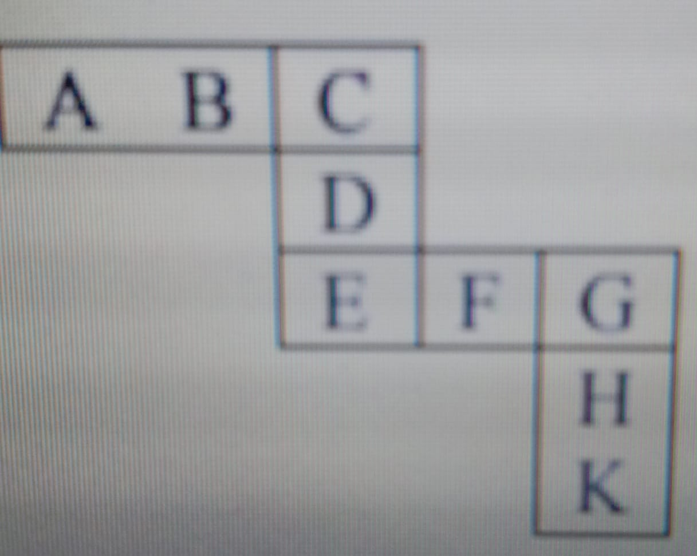

Civil Engineering Association
CEA presents you online mock gate test series.
APTITUDE
1.Knowledgeable dog owners recommend obtaining a purebred dog from a ______ breeder, one who is ______ and respected by customers and breeders alike.
discerning … equivocal
demanding … flexible
churlish … charming
reputable … admired
2.With a(n) ______ grin, the boy quickly slipped the candy into his pocket without his mother’s knowledge.
jaundiced
nefarious
stereotypical
sentimental
3.Find out the mean properties of 3 & 27 also find out their thind properties
9,243
10,81
15,19683
12,810
4.x and y are integers and if x^2/y^3 is even integer then which of the following must be an even integer?
x-y
y+1
x^2/y^4
xy
5.If E=0;J=20;O=30; and T=40, what will be P+E+S+T?
82
164
120
51
6.How many four digit numbers can be formed with 10 digit 0,1,2,3...9 if no number can start with 0 and if repetitions are not allowed?
4000
4536
3000
3536
7.The variable cost (V) of manufacturing a product varies according to the equation V = 4q, where q is the quantity produced. The fixed cost (F) of production of same product reduces with q according to the equation F = 100/q.How many units should be produced to minimize the total cost (V+F)?
5
4
7
6
8.Two machine M1 and M2 are able to execute any of four jobs P, Q, R, and S. The machine can perform one job on one object at a time. Jobs P, Q, R and S take 30 minutes, 20 minutes, 60 minutes and 15 minutes each respectively. There are 10 objects each requiring exactly 1 job. Job P is to be performed on 2 objects. Job Q on 3 objects, job R on 1 object and Job S on 4 objects. What is the minimum time needed to complete all the jobs?
2 hours
2.5 hours
3 hours
3.5 hours
9.Given that log 𝑃/ 𝑦−𝑧 = log𝑄/ 𝑧−𝑥 = log 𝑅/ 𝑥−𝑦 = 10 for 𝑥 ≠ 𝑦 ≠ 𝑧, what is the value of the product 𝑃𝑄𝑅?
0
1
xyz
10^(𝑥𝑦𝑧)
10.Each of the letters in the figure below represents a unique integer from 1 to 9. The letters are positioned in the figure such that each of (A+B+C), (C+D+E), (E+F+G) and (G+H+K) is equal to 13. Which integer does E represent? 
1
4
6
7
Submit
Your grade is:
__